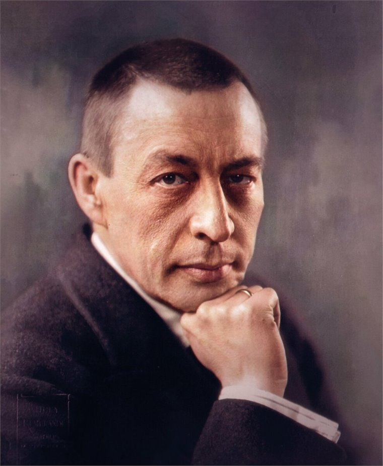

Человек и время
Биография без мифов
От Новгородской губернии и Московской консерватории до виллы Сенар и последних концертов в США.
Открыть хронологию1873–2023 · 150 лет со дня рождения
Композитор, пианист и дирижёр соединил русскую позднеромантическую традицию с опытом жизни между Россией, Европой и США. Эта выставка предлагает пройти его путь через документы, музыку и десять ключевых сочинений. [1]

Три входа в историю
Страницы соединены в единый маршрут, но каждая может быть самостоятельной точкой входа.
Человек и время
От Новгородской губернии и Московской консерватории до виллы Сенар и последних концертов в США.
Открыть хронологиюСлушательский маршрут
Поиск, жанры, хронология и подсказки для первого прослушивания — от «Алеко» до «Симфонических танцев».
Перейти к каталогуПамять и юбилей
Как 150-летие отмечали в Ивановке, Москве, Новгороде, Казани, Петербурге и Париже.
Увидеть географиюПоворотная точка
После тяжёлого приёма Первой симфонии в 1897 году Рахманинов почти три года не сочинял. Полное исполнение Второго фортепианного концерта в 1901 году стало одним из главных событий его творческого возвращения.
Слушая концерт, проследите, как колокольные аккорды вступления постепенно раскрывают широкую тему и превращают внутреннее усилие в движение большого симфонического целого.
Биографическая справка [1] Карточка произведения1900–1901
до минор, op. 18
фортепиано и оркестр
Контур жизни
20 марта (1 апреля) в Новгородской губернии.
Дипломная опера и Большая золотая медаль консерватории.
Семья покидает Россию; следующий этап начинается в Скандинавии.
Завершены «Симфонические танцы», op. 45.
Принцип выставки
Спорные место и дата рождения, история Первой симфонии и маршрут эмиграции сопровождаются оговорками. Каждый ключевой тезис ведёт к библиографии.
Открыть источники